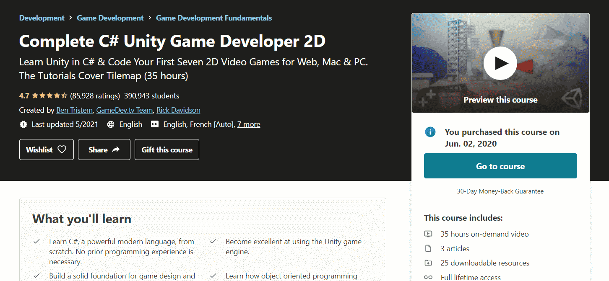

What is your reason?
Why are you learning programming? Is it for future career prospects or just something you are interested in? Are you learning it for school or do you strive to become a software developer in Google? Learning programming is an endless journey and honestly, it won’t be easy.
I strongly believe it helps to have a well-defined goal or purpose as to why you want to learn programming. This way, it is much easier for you to stay motivated and have a clear direction as you go about learning programming. Taking courses and watching videos online isn’t the difficult part, it’s sticking to your learning plan even when you don’t feel motivated.
Spend some time to think, why exactly do you want to learn programming?
Personally for me, I started learning how to code simply as a hobby. I was always interested in how games and phone apps worked and as i learned more and more about coding, developing such games and apps became a process i very much fell in love with.
Throughout my time learning programming, there were many days where i felt extremely unmotivated. It really helped to have a goal for myself to strive towards. For me, I always wanted to try developing my own game and on those days that I did not feel like coding at all, envisioning the final product I had in my mind really helped me to power through.
If you are able to have a good reason why you want to learn programming, it would really be a good form of motivation. It doesn’t matter how insignificant you think your reason is, as long as it gets you to start learning programming, I’m sure you will fall in love with the process much like I did.
Survey your options
Learning to code has quickly become a life skill that everyone is striving to attain. This also means that there is an ever-growing myriad of avenues to which we can learn how to code. Picking the right path for you is an important decision to ensure you are able to pick up coding as quickly and effectively as possible.
One easy and (more importantly) free option is YouTube! There are so many YouTubers online that teach programming at any level. From the basic syntax of a language to higher-level programming frameworks, YouTube truly is a great option to begin your programming journey. I believe you can find any tutorial on YouTube with just a simple search.
Just a simple search brings up so many options!
Personally, I started learning python from watching Youtube videos, specifically a youtuber called TechWithTim. I followed his pygame tutorial back in the day to learn python while developing simple games. I can gladly attest to the quality of his videos in particular and I really learned a lot of the basics from his videos on Pygame.
Tech with Tim was someone that helped me out a lot when I started, and I'm sure he can help you too!
However, one slight downside is that YouTube videos may lack a little in terms of the depth of content that is available. A quick 10 minutes video on YouTube can’t possibly compete with a 60-hour long programming bootcamp.
Don’t be too worried though! Being a beginner, the content on Youtube is definitely sufficient. There are many videos on YouTube that can teach the basics of most programming languages, and you will be equipped with more than enough skills to build your own projects or even start some simple freelancework just off of a few hours watching YouTube videos!
Another option is to take courses on Udemy! There is a plethora of programming courses on udemy and I myself have taken a dozen of these courses. From Web and App development to Machine Learning, udemy provides a large range of courses for programmers of all levels to enrol in.
Udemy has a myriad of programming courses for you to take on! Explore what course excites you!
Of course, they may be a little pricey, but if you were to purchase them on sale they will cost about $20 per course, which really is pretty affordable for the amount of content they provide! One great thing about udemy courses is that the instructor has already layed out a very thorough and well thought out plan for you to learn the specific course material.
This not only means you don’t have to rack your brains figuring out what to research, but also gives you a direction when it comes to your learning. This makes things a lot easier for you to stay motivated and learn as quickly as possible!
Personally, I really enjoyed the unity game engine courses and android studio courses provided on udemy. The amount of content available in these courses is really staggering, and the quality of the instructors are really professional. It really feels like the lesson plans are well paced and yet challenging enough to keep students engaged.

Amazing content and extremely well-paced. I highly recommend this course for anyone interested in game design!
Apply First Principles Thinking
First Principles Thinking is a philosophy that many trailblazers follow. Basically, it is the practice of actively questioning every assumption you think you know about a problem or situation and then forming your own opinions and solutions from scratch.
Boiling everything down to the fundamentals and forming your own opinions! Elon Musk has famously talked about First Principles Thinking and how everyone can go about adopting this philosophy.
"Rather than reasoning by analogy, you boil things down to the most fundamental truths you can imagine and you reason up from there."
-Elon Musk
In the world of programming, I truly believe having a First Principles Thinking mindset will really strengthen your fundamentals. Don’t just accept that a piece of code works, understand thoroughly why it works and how you can improve upon it.
As a beginner, it may be intimidating to attempt understanding code that others have written but this is exactly what you should do if you want to boost your programming skills. Why did the programmer place this line of code, why didn’t he use this method instead? Keep asking yourself questions, stay engaged and interested. Break the code down to its fundamentals and understand why it works!
It also helps to comment every line of code you write in the beginning so you understand why everything works and what each line of code is actually doing.
Don't be afraid, comment EVERY line!
The First solution isn’t always the Best
When coding, it is easy to just move on the moment our code is running as intended. This should not be the mentality to adopt when you are trying to learn how to code. As a beginner, try to write every piece of code multiple times using different methods, and decide which piece of code does the intended job the most efficiently.
If you feel like your code looks sloppy and unnecessarily slow, I promise you it is. Always take some time to rethink your code. Is this line of code really necessary? Can I avoid using this block of code? Maybe i can implement a loop to make this more elegant? Question your own code!
Personally, when i took an advanced coding course in Udacity, i was very happy when i solved some of the exercises that was presented to me during the course, but when reviewing the recommended solutions provided, i was blown away by the sheer elegance and effectiveness of their code. What I used 20 lines of code to solve, they used 5! It was a real eye-opening experience for me, making me realise in coding, there will definitely be a better way to do anything and everything!
Especially at the beginning, your code will be extremely inefficient and sloppy. Only by trying to think of different methods of solving problems can we really improve more quickly as coders. It’s nothing to be ashamed about! Everyone started somewhere.
As time passes and you look back at your old code, you will be amazed at how much you have improved as a coder, finding many new ways of tackling challenging problems. If you think there’s a better way, try it!
Practice makes perfect
I’m sure you have heard this common platitude countless times, and when it comes to coding, its applicability cannot be refuted. Practice, practice, practice! In programming, we have to practice to improve. Rote learning is NOT the way to go about learning programming. Maybe that works for school exams, but programming requires you to actually practice to become a better programmer!
There's no better way to improve than practice, especially when it comes to coding!
The single, sole way to learn how to be a proficient programmer is to practice. What i mean by practice is actually typing lines of code into your computer and running it. Watching a 8-hour lecture on Python or reading a 400 page book about C++ isn’t going to beat you actually sitting behind your computer and writing code.
If you are watching a video on youTube, don’t just watch the instructor type out the code, try typing it out yourself. Join python coding challenges online, build your own personal projects or even try mimicking an application that is already released! You can practice programming in a plethora of ways and you definitely should explore which one interests you the most.
Google
Every professional programmer should also have a second title - “Professional Googler”. Every programmer regardless of experience searches the web for answers when they are coding. There is absolutely no shame in googling for answers when you are faced with a problem in your code. I remember when I was learning programming and struggling to memorise all the built-in python methods I felt extremely demoralised.
Please make use of the most powerful source of information in the world! There's no shame in Googling!
I tried my best to avoid using Google because i felt like it was “cheating”. Now that I am slightly more experienced, I can gladly tell you that Googling is nothing to be ashamed of. Everyone uses it! Remember this, in coding it’s more important to know what is possible than remembering exactly how to do something. Knowing the limits of your programming language is far more important than memorising how to turn an integer into a string!
Apart from Googling for specific pieces of code and what they do, it is also important to have a very strong grasp of all the coding jargon being tossed around on the web.
When I was learning how to code, I remember feeling extremely loss when terms like GUI and IDE were used in articles i was reading online. Do not be afraid of terms like these, simply Google them!
There are so many programming terms out there and it's impossible to know them all... Google them!
It is important that you understand what they mean now, at the beginning of your coding journey, so you can really tackle bigger concepts in the future! Every single word that you don’t understand, Google! The earlier you embrace the art of Googling, the faster you will become a master programmer!
Conclusion
At the end of the day, I hope my article has at least inspired one of you to begin your programming journey. It’s fun, interesting and a great skill to have in today’s day and age! The tips I talked about in this article are all things I wished i knew when I began my own programming journey, so I really hoped you guys found it useful.
This concludes my first ever post on Coding Cucumbers, Thank you so much for reading up till the end. Anyways, that’s all from me and remember to stay chill cucumbers!